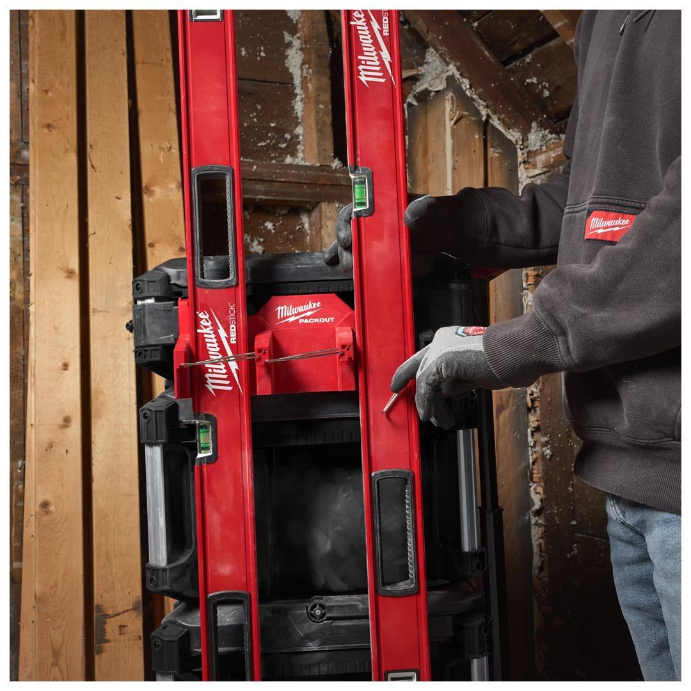
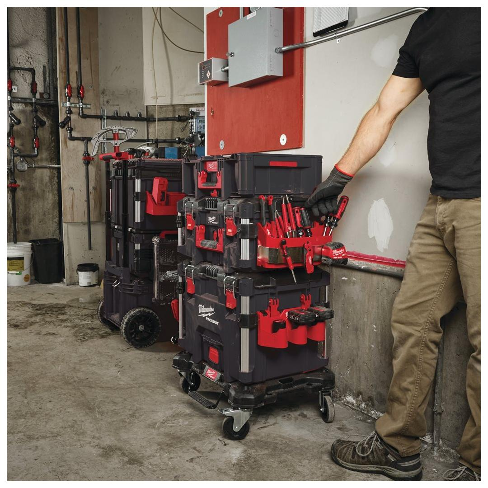
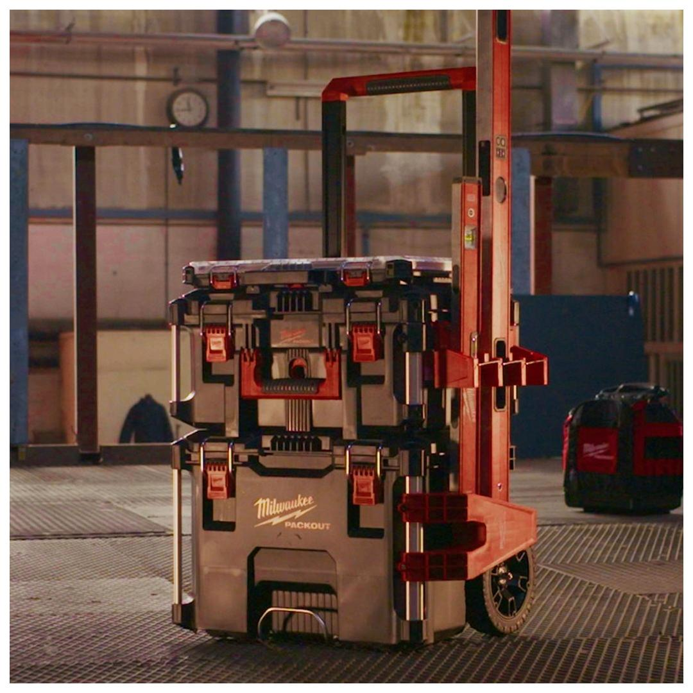
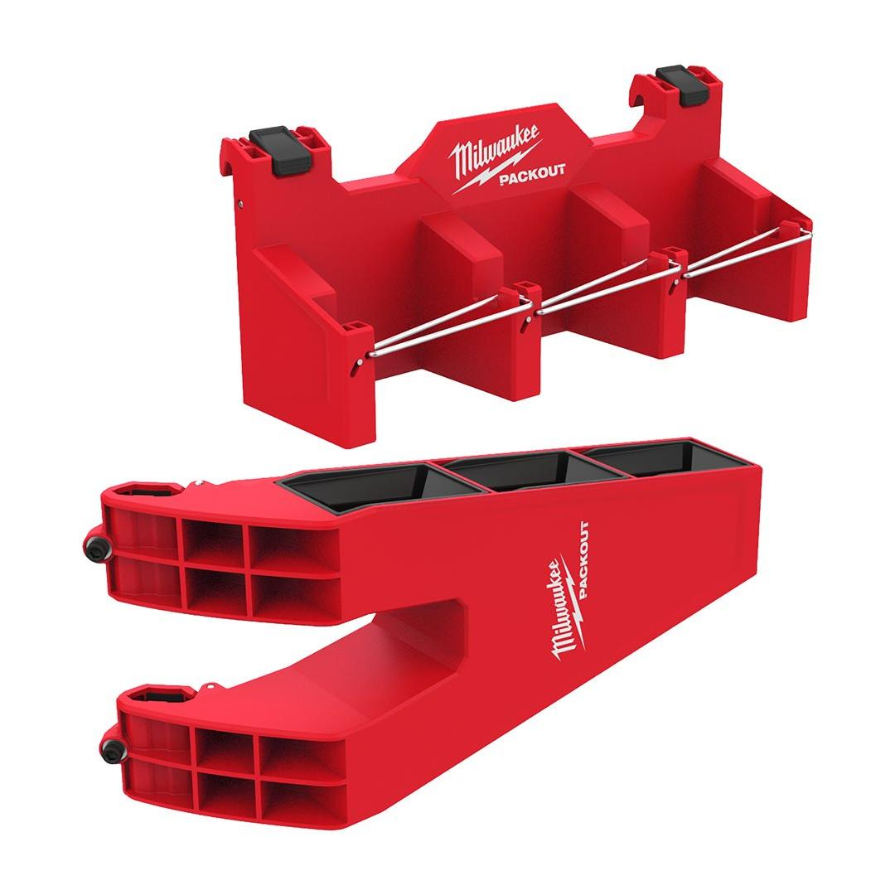
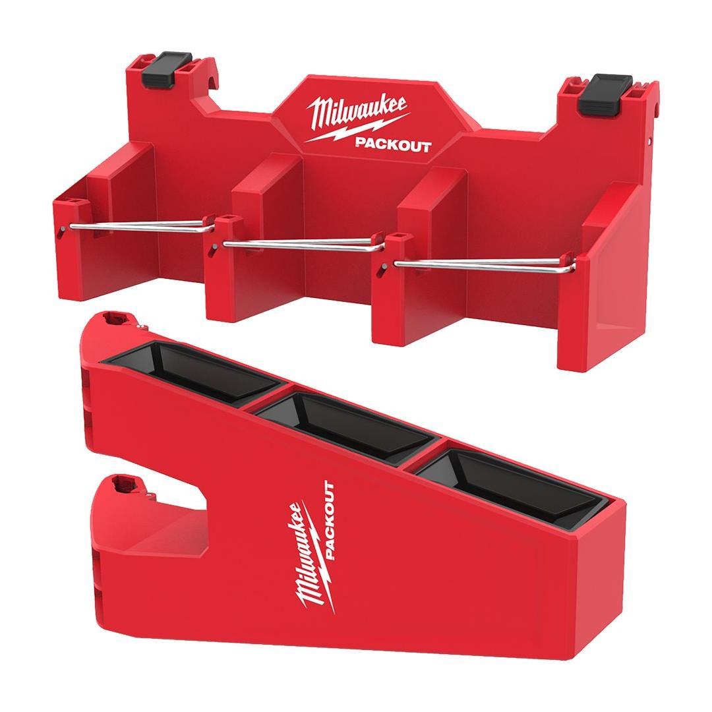

<h1>Milwaukee | PACKOUT Side Mount Long Tool Holder</h1><p>4932498649</p><div style="display:flex;flex-wrap:wrap;gap:8px"></div><h4>Features</h4><ul><li>Attach to PACKOUT™ rails in either orientation.</li><li>Quickly access long tools with carabiner style gates.</li><li>Reinforced base to secure tools - can be mounted on either side of metal rails.</li><li>Fits long tools like levels and pry bars.</li><li>Part of the PACKOUT™ modular storage system.</li></ul><h4>Information</h4><table><tr><td>Capacity [kg]</td><td>11</td></tr><tr><td>Dimensions (mm)</td><td>upper part: 122 x 293 x 93; lower part: 156 x 360 x 115</td></tr><tr><td>MOQ</td><td>1</td></tr><tr><td>Pack quantity</td><td>1</td></tr></table><h4>Weight</h4><table><tr><td>WEB_You tube Milwaukee 1x1 Product Clip</td><td>RJAb7MdOf8Q</td></tr></table>